22 Introduction to Bayesian Inference
22.1 Lecture
Amazing beasties and crazy animals
need to add stuff here
22.1.1 Bayes’ theorem
First, let’s review the theorem. Mathematically, it says how to convert one conditional probability into another one.
\[ P(B \mid A) = \frac{ P(A \mid B) * P(B)}{P(A)} \]
The formula becomes more interesting in the context of statistical modeling. We have some model that describes a data-generating process and we have some observed data, but we want to estimate some unknown model parameters. In that case, the formula reads like:
\[ P(\text{hypothesis} \mid \text{data}) = \frac{ P(\text{data} \mid \text{hypothesis}) * P(\text{hypothesis})}{P(\text{data})} \]
These terms have conventional names:
\[ \text{posterior} = \frac{ \text{likelihood} * \text{prior}}{\text{evidence}} \]
Prior and posterior describe when information is obtained: what we know pre-data is our prior information, and what we learn post-data is the updated information (“posterior”).
The likelihood in the equation says how likely the data is given the model parameters. I think of it as fit: How well do the parameters fit the data? Classical regression’s line of best fit is the maximum likelihood line. The likelihood also encompasses the data-generating process behind the model. For example, if we assume that the observed data is normally distributed, then we evaluate the likelihood by using the normal probability density function. You don’t need to know what that last sentence means. What’s important is that the likelihood contains our built-in assumptions about how the data is distributed.
The evidence (sometimes called average likelihood) is hareder to grasp. I am not sure how to describe it in an intuitive way. It’s there to make sure the math works out so that the posterior probabilities sum to 1. Some presentations of Bayes’ theorem gloss over it and I am not the exception 😄. The important thing to note is that the posterior is proportional to the likelihood and prior information.
\[ \text{posterior information} \propto \text{likelihood of data} * \text{prior information} \]
So simply put, you update your prior information in proportion to how well it fits the observed data. So essentially you are doing that on a daily basis for everything except when you ar doing frequentist stats 😄.

Warning
A word of encouragement! The prior is an intimidating part of Bayesian statistics. It seems highly subjective, as though we are pulling numbers from thin air, and it can be overwhelming for complex models. But if we are familiar with the kind of data we are modeling, we have prior information. We can have the model simulate new observations using the prior distribution and then plot the hypothetical data. Does anything look wrong or implausible about the simulated data? If so, then we have some prior information that we can include in our model. Note that we do not evaluate the plausibility of the simulated data based on the data we have in hand (the data we want to model); that’s not
22.1.2 Intro to MCMC
We will now walk through a simple example coded in R to illustrate how an MCMC algorithm works.
Suppose you are interested in the mean heart rate is of students when asked a question in a stat course. You are not sure what the exact mean value is, but you know the values are normally distributed with a standard deviation of 15. You have observed 5 individuals to have heart rate of 104, 120,160,90,130. You could use MCMC sampling to draw samples from the target distribution. We need to specify:
- the starting value for the chain.
- the length of the chain. In general, more iterations will give you more accurate output.
This is bayesplot version 1.11.1- Online documentation and vignettes at mc-stan.org/bayesplot- bayesplot theme set to bayesplot::theme_default() * Does _not_ affect other ggplot2 plots * See ?bayesplot_theme_set for details on theme settingset.seed(170)
hr_obs <- c(104, 112, 132, 115, 110)
start_value <- 250
n_iter <- 2500 # define number of iterations
pd_mean <- numeric(n_iter) # create vector for sample values
pd_mean[1] <- start_value # define starting value
for (i in 2:n_iter) {
proposal <- pd_mean[i - 1] + MASS::mvrnorm(1, 0, 5) # proposal
lprop <- sum(dnorm(proposal, hr_obs, 15)) # likelihood of proposed parameter
lprev <- sum(dnorm(pd_mean[i - 1], hr_obs, 15))
if (lprop / lprev > runif(1)) { # if likelihood of prosposed > likehood previous accept
# and if likelihood is lower accept with random noise
pd_mean[i] <- proposal
} # if true sample the proposal
else {
(pd_mean[i] <- pd_mean[i - 1])
} # if false sample the current value
}
pd_mean <- as.mcmc(data.frame(mean = pd_mean))
mcmc_combo(pd_mean, combo = c("trace", "dens"))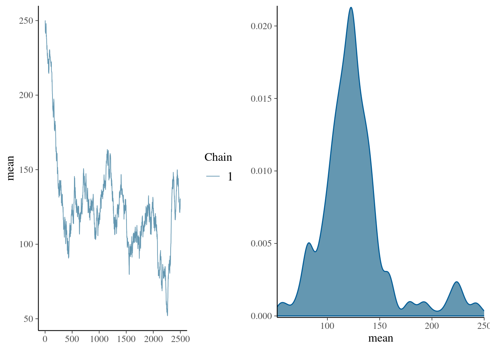
summary(pd_mean)
Iterations = 1:2500
Thinning interval = 1
Number of chains = 1
Sample size per chain = 2500
1. Empirical mean and standard deviation for each variable,
plus standard error of the mean:
Mean SD Naive SE Time-series SE
125.8105 32.8672 0.6573 13.3046
2. Quantiles for each variable:
2.5% 25% 50% 75% 97.5%
75.53 108.03 122.19 136.12 225.46 set.seed(170)
hr_obs <- c(104, 112, 132, 115, 110)
n_iter <- 2500 # define number of iterations
n_chain <- 3
start_value <- c(250, 100, 50)
pd_mean <- array(NA, dim = c(n_iter, n_chain, 1), dimnames = list(iter = NULL, chain = NULL, params = "beta")) # create vector for sample values
for (j in seq_len(n_chain)) {
pd_mean[1, j, 1] <- start_value[j] # define starting value
for (i in 2:n_iter) {
proposal <- pd_mean[i - 1, j, 1] + MASS::mvrnorm(1, 0, 5) # proposal
if (sum(dnorm(proposal, hr_obs, 15)) # likelihood of proposed parameter
/ sum(dnorm(pd_mean[i - 1, j, 1], hr_obs, 15)) > runif(1, 0, 1)) {
pd_mean[i, j, 1] <- proposal
} # if true sample the proposal
else {
(pd_mean[i, j, 1] <- pd_mean[i - 1, j, 1])
} # if false sample the current value
}
}
color_scheme_set("mix-blue-red")
mcmc_combo(pd_mean, combo = c("trace", "dens_overlay"))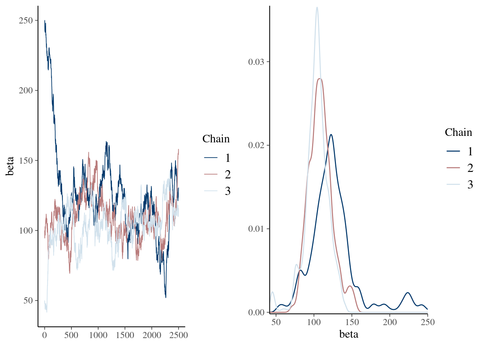
summary(pd_mean) Min. 1st Qu. Median Mean 3rd Qu. Max.
41.65 99.32 109.68 112.71 122.52 250.00 mcmc_combo(pd_mean, combo = c("trace", "dens_overlay"), n_warmup = 500)
Min. 1st Qu. Median Mean 3rd Qu. Max.
51.98 100.71 110.38 111.42 122.69 163.58 mcmc_combo(pd_burn, combo = c("trace", "dens_overlay"), iter1 = 501)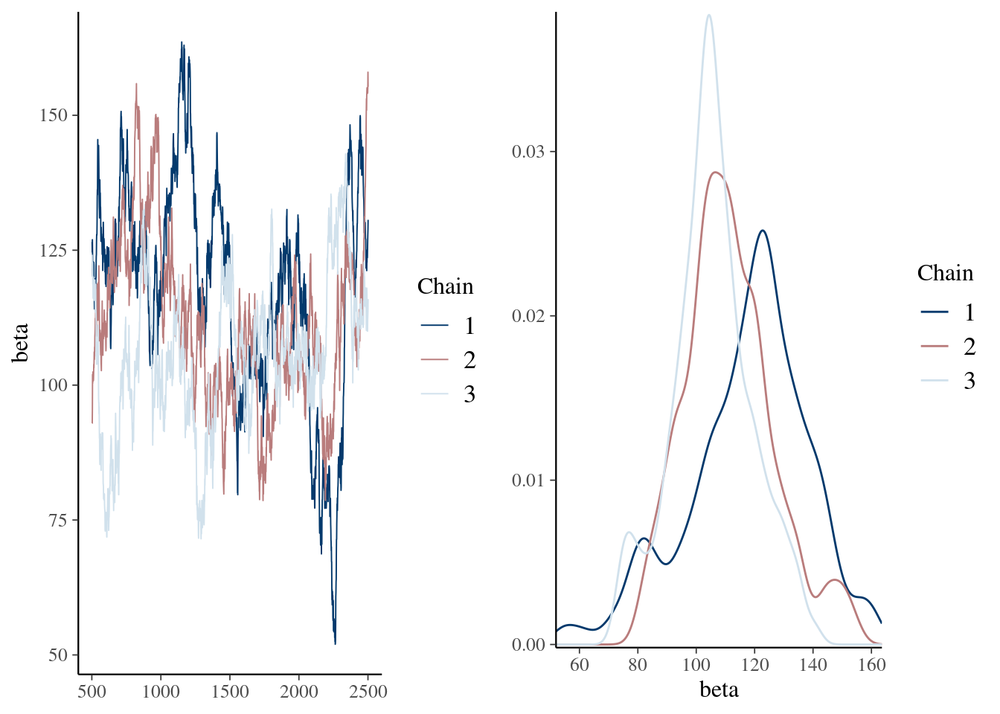
22.1.3 Inferences
22.1.3.1 Fixed effects
Easy peazy lemon squeezy just have a look at the posteriro distribution, does it overlap 0 yes or no.
talk about mean, median and mode of a distribution as well as credible intervals
22.1.3.2 Random effects
Quite a bit more harder. because constrained to be positive
- Interpreting posterior distribution
- DIC
- WAIC
22.2 Practical
In this practical, we will revisit our analysis on unicorn aggressivity. Honestly, we can use any other data with repeated measures for this exercise but I just love unicorns ❤️. However, instead of fittng the model using lmer() from the lmerTest 📦 (Kuznetsova et al. 2017), we will refit the model using 2 excellent softwares fitting models with a Bayesian approach: MCMCglmm (Hadfield 2010) and brms (Bürkner 2021).
22.2.1 R packages needed
First we load required libraries
22.2.2 A refresher on unicorn ecology
The last model on unicorns was:
aggression ~ opp_size + scale(body_size, center = TRUE, scale = TRUE)
+ scale(assay_rep, scale = FALSE) + block
+ (1 | ID)Those scaled terms are abit a sore for my eyes and way too long if we need to type them multiple times in this practical. So first let’s recode them. -
Ok now we can fit the same model by just using:
aggression ~ opp_size + body_size_sc + assay_rep_sc + block
+ (1 | ID)We can now fit a model using lmer(). Since we want to compare a bit REML and Bayesian aproaches, I am going to wrap the model function in a function called system.time(). This function simply estimate the user and computer time use by the function.
mer_time <- system.time(
m_mer <- lmer(
aggression ~ opp_size + body_size_sc + assay_rep_sc + block
+ (1 | ID),
data = unicorns
)
)
mer_time user system elapsed
0.065 0.000 0.065 summary(m_mer)Linear mixed model fit by REML. t-tests use Satterthwaite's method [
lmerModLmerTest]
Formula: aggression ~ opp_size + body_size_sc + assay_rep_sc + block +
(1 | ID)
Data: unicorns
REML criterion at convergence: 1136.5
Scaled residuals:
Min 1Q Median 3Q Max
-2.85473 -0.62831 0.02545 0.68998 2.74064
Random effects:
Groups Name Variance Std.Dev.
ID (Intercept) 0.02538 0.1593
Residual 0.58048 0.7619
Number of obs: 480, groups: ID, 80
Fixed effects:
Estimate Std. Error df t value Pr(>|t|)
(Intercept) 9.00181 0.03907 78.07315 230.395 <2e-16 ***
opp_size 1.05141 0.04281 396.99857 24.562 <2e-16 ***
body_size_sc 0.03310 0.03896 84.21144 0.850 0.398
assay_rep_sc -0.05783 0.04281 396.99857 -1.351 0.177
block -0.02166 0.06955 397.00209 -0.311 0.756
---
Signif. codes: 0 '***' 0.001 '**' 0.01 '*' 0.05 '.' 0.1 ' ' 1
Correlation of Fixed Effects:
(Intr) opp_sz bdy_s_ assy__
opp_size 0.000
body_siz_sc 0.000 0.000
assay_rp_sc 0.000 -0.100 0.000
block 0.000 0.000 0.002 0.000Ok so it took no time at all to do it and we got our “classic” results.
22.2.3 MCMCglmm
What makes MCMCglmm so useful and powerful 💪 in ecology and for practical Bayesian people is that:
- it is blazing fast ⏩ (for Bayesian analysis) for some models particularly models with structured covariances
- it is fairly intuitive to code
but it also has some inconvenients:
- it is blazing fast for Bayesian analysis meaning it is 🐌 compared to maximum likelihood approaches
- it has some limitations in terms of functionality, distribution availability and model specifications compared to other Bayesian softwares
- the priors, oh, the priors 😭, are a bit tricky to code and understand 🤯.
22.2.3.1 Fitting the Model
So here is how we can code the model in MCMCglmm(). It is fairly similar to lmer() except that the random effects are specified in a different argument.
mcglm_time <- system.time(
m_mcmcglmm <- MCMCglmm(
aggression ~ opp_size + body_size_sc + assay_rep_sc + block,
random = ~ID,
data = unicorns
)
)
MCMC iteration = 0
MCMC iteration = 1000
MCMC iteration = 2000
MCMC iteration = 3000
MCMC iteration = 4000
MCMC iteration = 5000
MCMC iteration = 6000
MCMC iteration = 7000
MCMC iteration = 8000
MCMC iteration = 9000
MCMC iteration = 10000
MCMC iteration = 11000
MCMC iteration = 12000
MCMC iteration = 13000summary(m_mcmcglmm)
Iterations = 3001:12991
Thinning interval = 10
Sample size = 1000
DIC: 1128.004
G-structure: ~ID
post.mean l-95% CI u-95% CI eff.samp
ID 0.003686 9.807e-14 0.0262 45.81
R-structure: ~units
post.mean l-95% CI u-95% CI eff.samp
units 0.6044 0.5228 0.6819 1000
Location effects: aggression ~ opp_size + body_size_sc + assay_rep_sc + block
post.mean l-95% CI u-95% CI eff.samp pMCMC
(Intercept) 9.00152 8.93150 9.07158 1000 <0.001 ***
opp_size 1.04940 0.96813 1.12946 1000 <0.001 ***
body_size_sc 0.03154 -0.03985 0.09563 1000 0.410
assay_rep_sc -0.05620 -0.13196 0.03546 893 0.184
block -0.02069 -0.16186 0.11553 1000 0.774
---
Signif. codes: 0 '***' 0.001 '**' 0.01 '*' 0.05 '.' 0.1 ' ' 1mcglm_time user system elapsed
1.400 0.001 1.411 Model is slow and not good. We need more iteration and maybe even a longer burnin, and honestly maybe better priors.
We can still take the time to have a look at the R object output from MCMCglmm(). The 2 main parts we are interrested in are:
-
Solwhich stand for the model solution and includes the posteriro distribution of the fixed effects -
VCV, for the variance covariance estimates, which includes the posterior distribution of all (co)variances estimates for both random effects and residual variance.
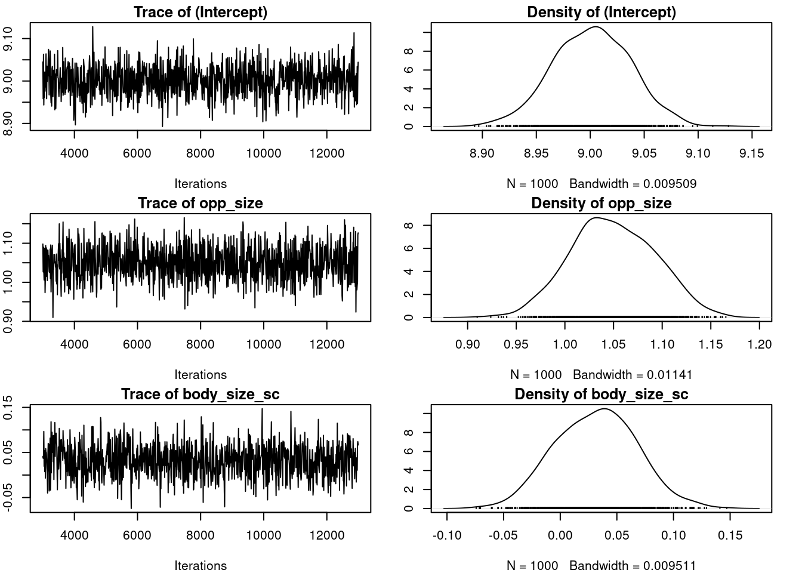
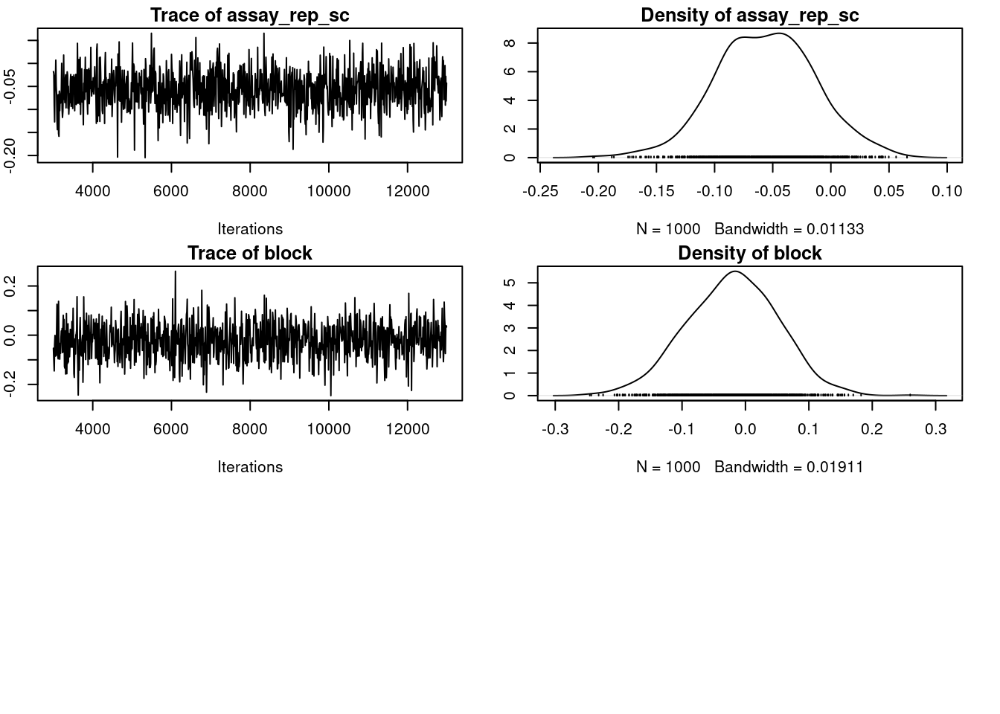
plot(m_mcmcglmm$VCV)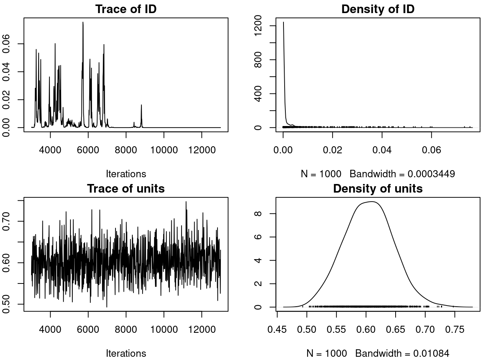
par(omar)
autocorr.diag(m_mcmcglmm$VCV) ID units
Lag 0 1.0000000 1.00000000
Lag 10 0.8042405 -0.02074155
Lag 50 0.4807583 -0.04264317
Lag 100 0.1951356 0.04422296
Lag 500 0.1254589 0.04401956Talk about autocorrelation, mixing, convergence and priors here
n_samp <- 1000
thin <- 500
burnin <- 20000
mcglm_time <- system.time(
m_mcmcglmm <- MCMCglmm(
aggression ~ opp_size + body_size_sc + assay_rep_sc + block,
random = ~ID,
data = unicorns,
nitt = n_samp * thin + burnin, thin = thin, burnin = burnin,
verbose = FALSE,
prior = list(
R = list(V = 1, nu = 0.002),
G = list(
G1 = list(V = 1, nu = 0.002)
)
)
)
)
summary(m_mcmcglmm)
Iterations = 20001:519501
Thinning interval = 500
Sample size = 1000
DIC: 1126.66
G-structure: ~ID
post.mean l-95% CI u-95% CI eff.samp
ID 0.01987 0.0002904 0.05458 1000
R-structure: ~units
post.mean l-95% CI u-95% CI eff.samp
units 0.5917 0.5188 0.6763 1000
Location effects: aggression ~ opp_size + body_size_sc + assay_rep_sc + block
post.mean l-95% CI u-95% CI eff.samp pMCMC
(Intercept) 9.00136 8.92221 9.07383 1000 <0.001 ***
opp_size 1.05363 0.96382 1.13650 1000 <0.001 ***
body_size_sc 0.03373 -0.03781 0.10686 1000 0.396
assay_rep_sc -0.05861 -0.14186 0.02882 1000 0.182
block -0.02709 -0.16061 0.11441 1000 0.698
---
Signif. codes: 0 '***' 0.001 '**' 0.01 '*' 0.05 '.' 0.1 ' ' 1mcglm_time user system elapsed
55.712 0.001 55.793 evaluate model here
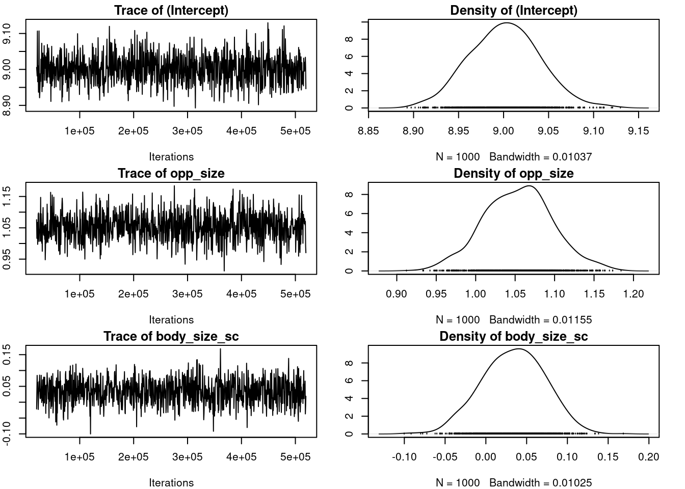
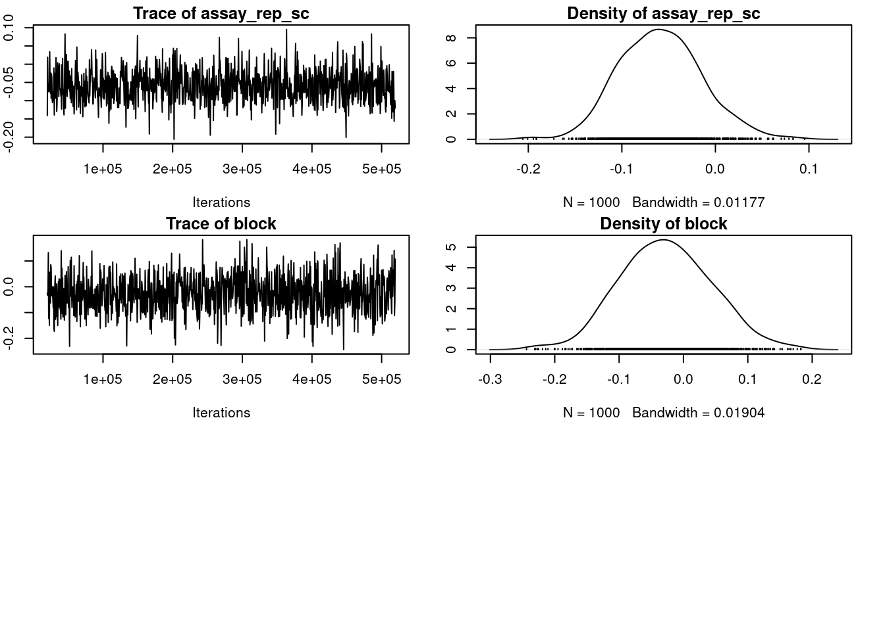
plot(m_mcmcglmm$VCV)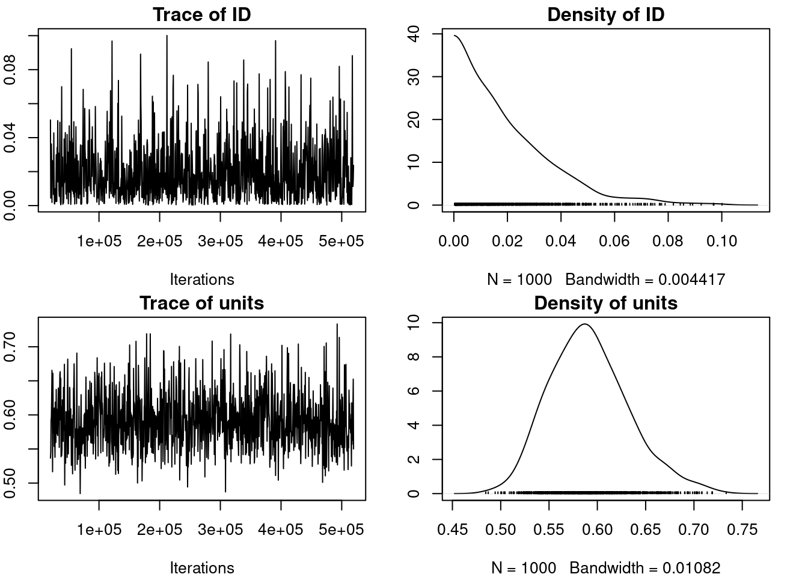
par(omar)
autocorr.diag(m_mcmcglmm$VCV) ID units
Lag 0 1.000000000 1.000000000
Lag 500 0.013876043 -0.044235206
Lag 2500 0.026120260 -0.048012241
Lag 5000 -0.049357725 0.021158672
Lag 25000 0.002544256 -0.00372259522.2.4 Inferences
22.2.4.1 Fixed effects
Easy peazy lemon squeezy just have a look at the posterior distribution, does it overlap 0 yes or no.
posterior.mode(m_mcmcglmm$Sol) (Intercept) opp_size body_size_sc assay_rep_sc block
9.00632282 1.07353252 0.03500916 -0.04048582 -0.03276275 HPDinterval(m_mcmcglmm$Sol) lower upper
(Intercept) 8.92221005 9.07383400
opp_size 0.96382086 1.13649873
body_size_sc -0.03781276 0.10685606
assay_rep_sc -0.14185602 0.02882443
block -0.16060691 0.11440706
attr(,"Probability")
[1] 0.9522.2.4.2 Random effects
Quite a bit more harder. because constrained to be positive
posterior.mode(m_mcmcglmm$VCV) ID units
0.00096263 0.59129362 HPDinterval(m_mcmcglmm$VCV) lower upper
ID 0.0002903938 0.05458376
units 0.5188238599 0.67634529
attr(,"Probability")
[1] 0.9522.2.5 brms
brms is an acronym for Bayesian Regression Models using ‘Stan’ (Bürkner 2021). It is a package developed to fit regression models with a Bayesian approach using the amazing stan software (Stan Development Team 2021).
What makes brms so useful and powerful 💪 in ecology is that:
- it is really intuitive to code (same syntax as
glmer()) - it is incredibly flexible since it is essentially a front end for
stanvia itsrstaninterface (rstan?)
but with great powers come great responsability 🕷️
brm_time <- system.time(
m_brm <- brm(
aggression ~ opp_size + body_size_sc + assay_rep_sc + block
+ (1 | ID),
data = unicorns, iter = 4750, warmup = 1000, thin = 15, cores = 4
# refresh = 0
)
)Compiling Stan program...Start samplingbrm_time user system elapsed
94.069 4.522 83.025 summary(m_brm) Family: gaussian
Links: mu = identity; sigma = identity
Formula: aggression ~ opp_size + body_size_sc + assay_rep_sc + block + (1 | ID)
Data: unicorns (Number of observations: 480)
Draws: 4 chains, each with iter = 4750; warmup = 1000; thin = 15;
total post-warmup draws = 1000
Multilevel Hyperparameters:
~ID (Number of levels: 80)
Estimate Est.Error l-95% CI u-95% CI Rhat Bulk_ESS Tail_ESS
sd(Intercept) 0.14 0.07 0.02 0.27 1.00 967 792
Regression Coefficients:
Estimate Est.Error l-95% CI u-95% CI Rhat Bulk_ESS Tail_ESS
Intercept 9.00 0.04 8.93 9.07 1.00 897 932
opp_size 1.05 0.04 0.97 1.13 1.00 952 939
body_size_sc 0.03 0.04 -0.05 0.11 1.00 879 994
assay_rep_sc -0.06 0.05 -0.15 0.03 1.00 867 925
block -0.02 0.07 -0.15 0.12 1.00 1025 995
Further Distributional Parameters:
Estimate Est.Error l-95% CI u-95% CI Rhat Bulk_ESS Tail_ESS
sigma 0.76 0.03 0.71 0.82 1.00 1018 1046
Draws were sampled using sampling(NUTS). For each parameter, Bulk_ESS
and Tail_ESS are effective sample size measures, and Rhat is the potential
scale reduction factor on split chains (at convergence, Rhat = 1).mcmc_acf_bar(m_brm, regex_pars = c("sd"))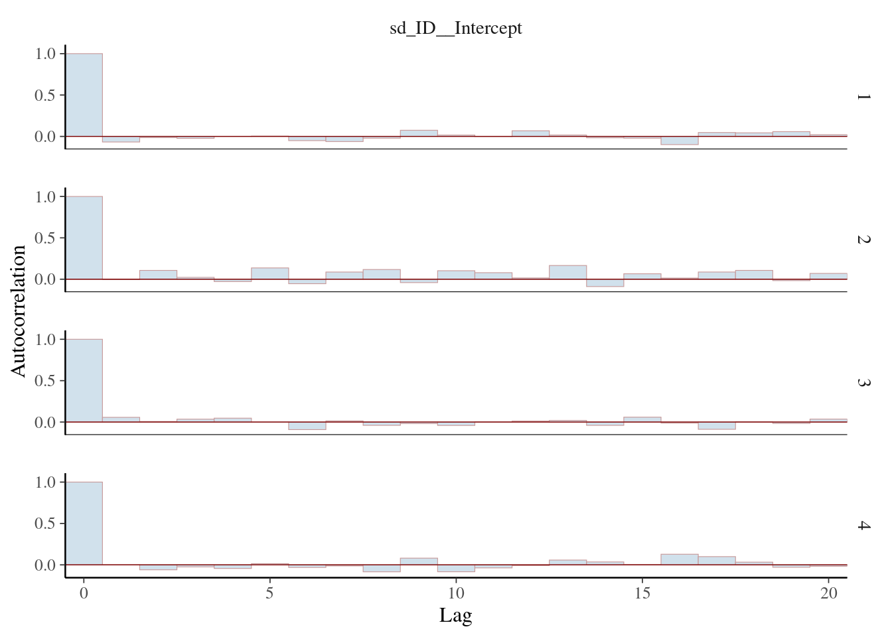
22.2.5.1 Hunder the hood
have a look at the stan code
stancode(m_brm)// generated with brms 2.21.0
functions {
}
data {
int<lower=1> N; // total number of observations
vector[N] Y; // response variable
int<lower=1> K; // number of population-level effects
matrix[N, K] X; // population-level design matrix
int<lower=1> Kc; // number of population-level effects after centering
// data for group-level effects of ID 1
int<lower=1> N_1; // number of grouping levels
int<lower=1> M_1; // number of coefficients per level
array[N] int<lower=1> J_1; // grouping indicator per observation
// group-level predictor values
vector[N] Z_1_1;
int prior_only; // should the likelihood be ignored?
}
transformed data {
matrix[N, Kc] Xc; // centered version of X without an intercept
vector[Kc] means_X; // column means of X before centering
for (i in 2:K) {
means_X[i - 1] = mean(X[, i]);
Xc[, i - 1] = X[, i] - means_X[i - 1];
}
}
parameters {
vector[Kc] b; // regression coefficients
real Intercept; // temporary intercept for centered predictors
real<lower=0> sigma; // dispersion parameter
vector<lower=0>[M_1] sd_1; // group-level standard deviations
array[M_1] vector[N_1] z_1; // standardized group-level effects
}
transformed parameters {
vector[N_1] r_1_1; // actual group-level effects
real lprior = 0; // prior contributions to the log posterior
r_1_1 = (sd_1[1] * (z_1[1]));
lprior += student_t_lpdf(Intercept | 3, 8.9, 2.5);
lprior += student_t_lpdf(sigma | 3, 0, 2.5)
- 1 * student_t_lccdf(0 | 3, 0, 2.5);
lprior += student_t_lpdf(sd_1 | 3, 0, 2.5)
- 1 * student_t_lccdf(0 | 3, 0, 2.5);
}
model {
// likelihood including constants
if (!prior_only) {
// initialize linear predictor term
vector[N] mu = rep_vector(0.0, N);
mu += Intercept;
for (n in 1:N) {
// add more terms to the linear predictor
mu[n] += r_1_1[J_1[n]] * Z_1_1[n];
}
target += normal_id_glm_lpdf(Y | Xc, mu, b, sigma);
}
// priors including constants
target += lprior;
target += std_normal_lpdf(z_1[1]);
}
generated quantities {
// actual population-level intercept
real b_Intercept = Intercept - dot_product(means_X, b);
}22.2.5.2 using shiny
launch_shinystan(m_brm)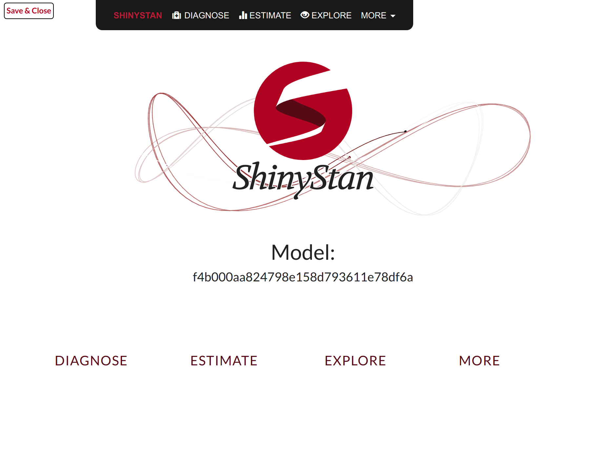
22.2.6 Inferences
22.2.6.1 Fixed effects
summary(m_brm) Family: gaussian
Links: mu = identity; sigma = identity
Formula: aggression ~ opp_size + body_size_sc + assay_rep_sc + block + (1 | ID)
Data: unicorns (Number of observations: 480)
Draws: 4 chains, each with iter = 4750; warmup = 1000; thin = 15;
total post-warmup draws = 1000
Multilevel Hyperparameters:
~ID (Number of levels: 80)
Estimate Est.Error l-95% CI u-95% CI Rhat Bulk_ESS Tail_ESS
sd(Intercept) 0.14 0.07 0.02 0.27 1.00 967 792
Regression Coefficients:
Estimate Est.Error l-95% CI u-95% CI Rhat Bulk_ESS Tail_ESS
Intercept 9.00 0.04 8.93 9.07 1.00 897 932
opp_size 1.05 0.04 0.97 1.13 1.00 952 939
body_size_sc 0.03 0.04 -0.05 0.11 1.00 879 994
assay_rep_sc -0.06 0.05 -0.15 0.03 1.00 867 925
block -0.02 0.07 -0.15 0.12 1.00 1025 995
Further Distributional Parameters:
Estimate Est.Error l-95% CI u-95% CI Rhat Bulk_ESS Tail_ESS
sigma 0.76 0.03 0.71 0.82 1.00 1018 1046
Draws were sampled using sampling(NUTS). For each parameter, Bulk_ESS
and Tail_ESS are effective sample size measures, and Rhat is the potential
scale reduction factor on split chains (at convergence, Rhat = 1).mcmc_plot(m_brm, regex_pars = "b_")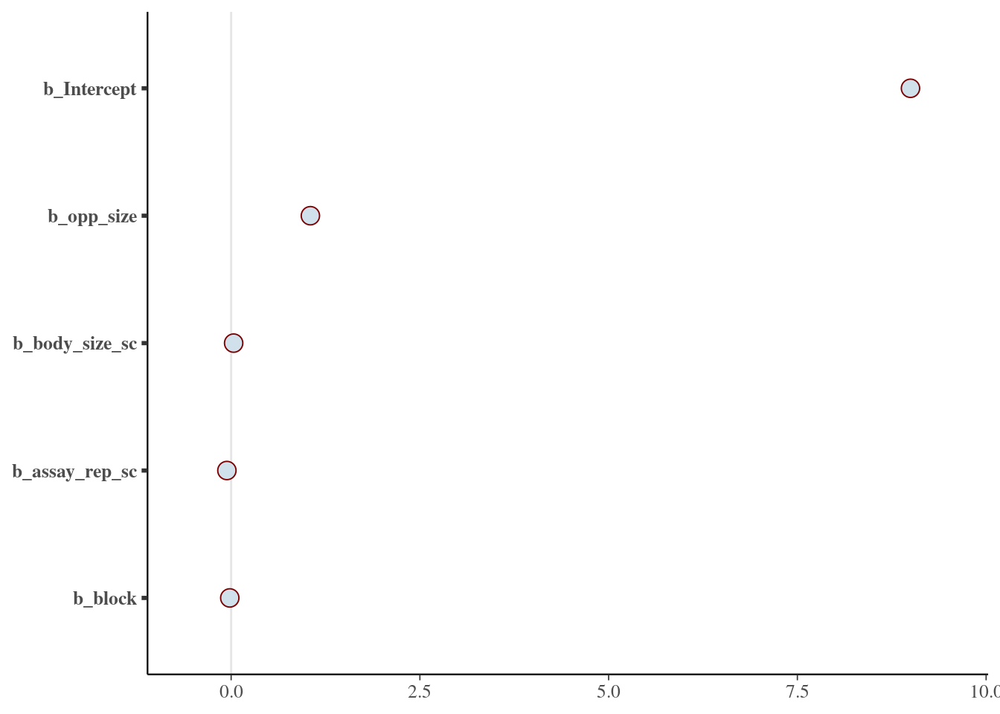
22.2.6.2 Random effects
summary(m_brm) Family: gaussian
Links: mu = identity; sigma = identity
Formula: aggression ~ opp_size + body_size_sc + assay_rep_sc + block + (1 | ID)
Data: unicorns (Number of observations: 480)
Draws: 4 chains, each with iter = 4750; warmup = 1000; thin = 15;
total post-warmup draws = 1000
Multilevel Hyperparameters:
~ID (Number of levels: 80)
Estimate Est.Error l-95% CI u-95% CI Rhat Bulk_ESS Tail_ESS
sd(Intercept) 0.14 0.07 0.02 0.27 1.00 967 792
Regression Coefficients:
Estimate Est.Error l-95% CI u-95% CI Rhat Bulk_ESS Tail_ESS
Intercept 9.00 0.04 8.93 9.07 1.00 897 932
opp_size 1.05 0.04 0.97 1.13 1.00 952 939
body_size_sc 0.03 0.04 -0.05 0.11 1.00 879 994
assay_rep_sc -0.06 0.05 -0.15 0.03 1.00 867 925
block -0.02 0.07 -0.15 0.12 1.00 1025 995
Further Distributional Parameters:
Estimate Est.Error l-95% CI u-95% CI Rhat Bulk_ESS Tail_ESS
sigma 0.76 0.03 0.71 0.82 1.00 1018 1046
Draws were sampled using sampling(NUTS). For each parameter, Bulk_ESS
and Tail_ESS are effective sample size measures, and Rhat is the potential
scale reduction factor on split chains (at convergence, Rhat = 1).Warning: Argument 'pars' is deprecated. Please use 'variable' instead.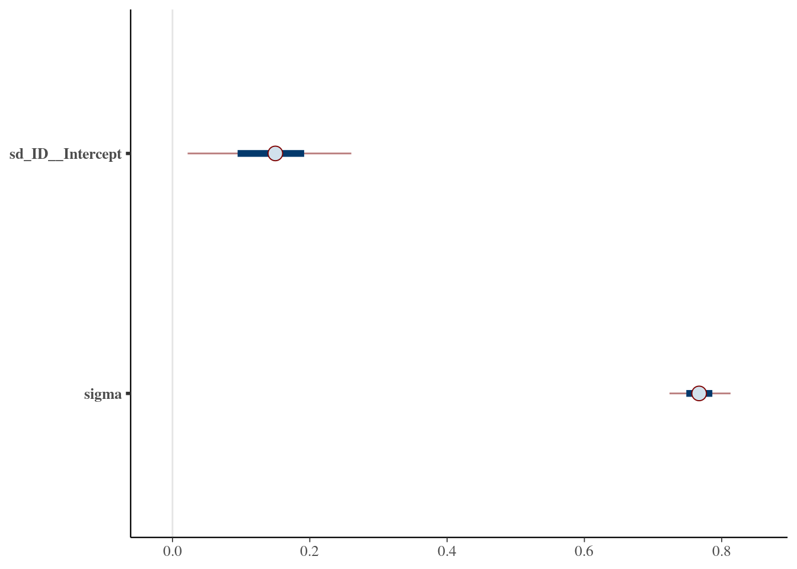